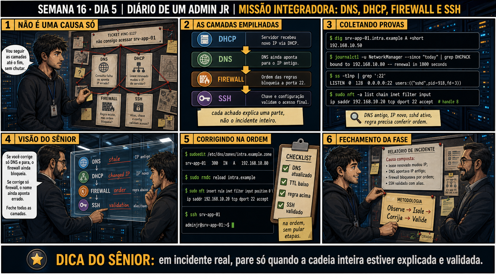

Semana 16 · Dia 5 | Missão Integradora — Fecha os Fundamentos de Rede
Missão Integradora: DNS, DHCP, Firewall e SSH
em incidente real, pare só quando a cadeia inteira estiver explicada e validada
ANTES DE ALTERAR, OBSERVE. DEPOIS DE ALTERAR, VALIDE.
1. O chamado
#INC-5127
PRIORIDADE CRÍTICA
07:00
aberto por: monitoramento
host: srv-app-01 · serviço: acesso geral (DNS, DHCP, firewall, SSH)
"não consigo acessar srv-app-01."
Quatro suspeitos no quadro: DNS, DHCP, firewall e SSH. Vou seguir as camadas até o fim, sem chutar — por onde você começa?
💡 Passa o mouse nas palavras destacadas pra ver uma dica rápida — clica se quiser a explicação completa com analogia.
2. Antes de ver as opções — tenta responder
🧠 Recall ativo: por que o painel 4 da prancha de hoje avisa "se você corrige só DNS e para, o
firewall ainda bloqueia — feche todas as camadas"?
Um incidente com
causa composta
tem MAIS de uma causa real ao mesmo tempo. Corrigir só uma (ex: DNS) resolve só parte do problema — as
outras (DHCP, firewall) continuam ativas, e o sintoma final ("não acessa") persiste até TODAS serem
corrigidas e validadas juntas.
3. Questão comentada — clica numa alternativa
dig srv-app-01.intra.example A retorna 192.168.10.50. journalctl mostra que o
lease DHCP foi renovado e o servidor agora tem 192.168.10.80. ss -tlnp confirma sshd escutando. nft -a list
mostra uma regra permitindo o IP de gestão, mas SEM regra pra porta 22 no geral. Qual é a leitura correta?
💡 Analogia do Sênior para Fixar: O princípio fundamental de 05 MISSAO INTEGRADORA FASE2 é como o alicerce de sustentação de um viaduto: garante que a estrutura de comunicação suporte alto tráfego sem colapsar.
4. Decodificador de conceitos
Clica em qualquer termo pra ver a definição completa e uma analogia do dia a dia:
5. Ferramentas e leitura da evidência
| Camada | Ferramenta | O que descobriu |
|---|---|---|
| DNS | dig srv-app-01.intra.example A +short | Aponta IP antigo (stale). |
| DHCP | journalctl -u NetworkManager | grep DHCPACK | Lease renovado com IP novo. |
| Firewall | nft -a list chain inet filter input | Ordem/presença da regra precisa ser conferida. |
| SSH | ssh srv-app-01 | Validação final do acesso, usando alias/config. |
$ dig srv-app-01.intra.example A +short
192.168.10.50
$ journalctl -u NetworkManager --since "today" | grep DHCPACK
bound to 192.168.10.80 -- renewal in 1800 seconds
$ ss -tlnp | grep ':22'
LISTEN 0 128 0.0.0.0:22 0.0.0.0:* users:(("sshd",pid=918,fd=3))
$ sudo nft -a list chain inet filter input
ip saddr 192.168.10.20 tcp dport 22 accept # handle 8
--- correção, na ordem ---
$ sudoedit /etc/dns/zones/intra.example.zone
srv-app-01 300 IN A 192.168.10.80
$ sudo rndc reload intra.example
$ sudo nft insert rule inet filter input position 0 \
ip saddr 192.168.10.20 tcp dport 22 accept
$ ssh srv-app-01
adminjr@srv-app-01:~$
5.1 Você corrigiu o registro DNS e testou dig de novo, confirmando o IP correto
Um colega já quer fechar o incidente, satisfeito com o DNS corrigido.
Por que fechar o incidente aqui, sem confirmar SSH funcionando de ponta a ponta,
é prematuro?
💡 Analogia do Sênior para Fixar: Diagnosticar anomalias em 05 MISSAO INTEGRADORA FASE2 é como o eletricista usando o multímetro no quadro de disjuntores: mede a passagem de sinal no ponto exato da falha.
5.2 "Metodologia formal (observe → isole → corrija → valide) é só burocracia pra incidentes simples?"
Um colega acha que, pra um problema "óbvio", pode pular direto pra correção.
Por que seguir a metodologia mesmo em incidentes que parecem simples é uma
prática correta?
💡 Analogia do Sênior para Fixar: Aplicar as boas práticas de 05 MISSAO INTEGRADORA FASE2 é como o protocolo de segurança da aviação: elimina pontos únicos de falha e garante previsibilidade operacional.
6. Procedimento profissional
- Diante de "não consigo acessar", mapeie os suspeitos possíveis: DNS, DHCP, firewall, SSH.
- Colete evidência de cada um, sem assumir que só uma causa existe.
- Corrija cada causa confirmada, na ordem que faz sentido (fonte de verdade primeiro).
- Valide o resultado final de ponta a ponta — o acesso real funcionando, não só cada correção isolada.
- Documente a cadeia completa de causas, mesmo que sejam múltiplas.
7. Laboratório guiado — a Missão Integradora completa
⚠️ Este laboratório precisa de uma segunda máquina/VM real (ou de hardware/reboot que um terminal online não reproduz) — pratique no seu ambiente virtual. Não está disponível no terminal Killercoda.
Segurança: execute os testes apenas em VM descartável e confirme nomes de discos, hosts e arquivos antes de cada comando.
- Em VM de laboratório, simule o cenário: DNS apontando pra um IP antigo, servidor com IP novo via DHCP.Resultado esperado: dig retorna IP diferente do IP real da interface do servidor.
- Configure um firewall com regra restritiva de SSH, mas sem regra geral de accept, e teste o acesso.Resultado esperado: acesso via IP antigo falha por DNS; acesso via IP real pode falhar por firewall.
- Investigue cada camada separadamente (DNS, DHCP, firewall) antes de aplicar qualquer correção.Resultado esperado: duas ou mais causas identificadas e documentadas.🧑🏫 Aqui entra o Mentor (em breve): se depois de corrigir DNS e firewall o acesso ainda falhar, este é o ponto onde o chat com o Sênior-IA vai ajudar a investigar SSH (chave, config) como uma terceira causa possível.
- Corrija cada causa confirmada, na ordem certa, e teste após cada correção.Resultado esperado: progresso incremental visível a cada correção.
- Valide o acesso final com ssh alias, e documente a cadeia completa de causas — reproduzindo o painel 6 da prancha de hoje.Resultado esperado: relatório de incidente com causa composta, metodologia Observe → Isole → Corrija → Valide.
8. Validação e encerramento
- Todas as camadas suspeitas (DNS, DHCP, firewall, SSH) foram investigadas, não só a primeira óbvia.
- Cada causa confirmada foi corrigida na ordem correta.
- O acesso final foi validado de ponta a ponta, não apenas cada correção isolada.
- A documentação registrou a cadeia completa de causas compostas.
Rollback e limites
Cada correção de hoje (DNS, firewall) tem seu próprio rollback já ensinado nas
semanas anteriores — backup de zona DNS, backup de ruleset nftables. O cuidado real de hoje é não parar na
primeira causa encontrada; feche o incidente só quando a cadeia inteira estiver explicada e validada.
💡 Sobre repetição espaçada: hoje não é um conceito novo — é a integração das
quatro semanas (13-16) num único fluxo. O Anki vai reforçar o método completo como uma unidade só, igual fez
com a Missão Final da Fase 1.
9. Resposta final
Alternativa correta: A. Nesta aula, a leitura certa foi causa
composta: DNS desatualizado + firewall a conferir, exigindo correção de ambos. O ponto central do caso é
este: em incidente real, pare só quando a cadeia inteira estiver explicada e validada.
🏁 FUNDAMENTOS DE REDE CONCLUÍDOS (Semanas 13-16)
TCP/IP e camadas, DNS e DHCP, firewall stateful e nftables, chaves SSH e diagnóstico formal — a base completa de rede está pronta. A partir da Semana 17, a Fase 2 avança para NAT, VPN, análise de pacotes com tcpdump, VLAN, NFS e Samba, fechando com a Missão Final Júnior na Semana 24.
🔓 O que você desbloqueou hoje — e nas últimas 4 semanas
Capacidade de resolver um incidente de causa composta, combinando DNS, DHCP,
firewall e SSH numa investigação só. Isso fecha o bloco de fundamentos de rede. Amanhã começa a Semana 17
com NAT — o que acontece quando vários dispositivos internos compartilham um único IP público, e por que
esquecer a regra de firewall junto com a de NAT é um erro clássico.